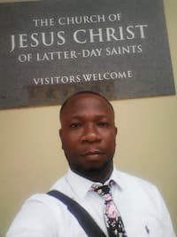

boateng-dev | WDD 130
My name is boateng-dev and I am from Accra Ghana. My dream is to become one of the best programmer in the the world. And I am grateful to be here today.
My name is boateng-dev and I am from Accra Ghana. My dream is to become one of the best programmer in the the world. And I am grateful to be here today.